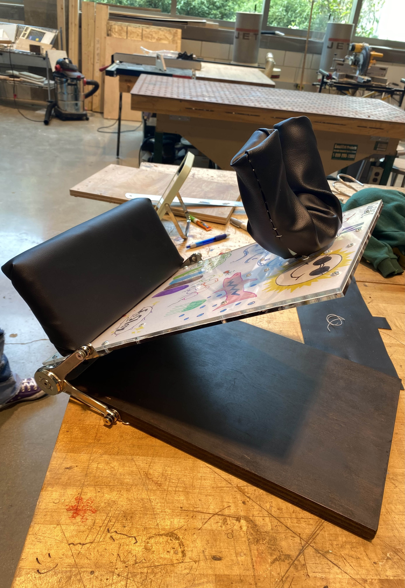

Mag-Tags
Class project at Northwestern
Finding Areas to Innovate
The goal of this project was to find an area of "real problem opportunities". This meant taking a step back, and attempting to find a space that our team could innovate in. Our surveys and research led us to face how we store our keys. Specifically, current methods are cumbersome, inefficient, and loud. We focused extensively on framing this problem as one of accessibility – keys prevent humans from getting somewhere or something we want.
Testing Benchmark Products
After spending time defining our problem, we gathered and tested existing products that claimed to address this problem. We conducted experiments to see how existing products stacked up in the following ways: efficiency to find specific keys, simplicity to assemble, and noise levels. After this, we realized there was a great opportunity here, as none of our benchmarks performed well in all three areas.
Creating Lo-Fi Mock-ups
Next, we created low-fidelity mockups (as seen to the left), to test against our benchmarks. In our user testing, we broke through in our solution. We observed that people were most comfortable with the traditional key-ring, despite it being loud, and confusing to organize. Thus, our problem was reframed from “how do we replace the key-ring” to “how do we make the key-ring quiet and more organized”.
Polishing Up the Product
Our final solution, Mag-Tags, provided advantage over existing products in performance, manufacturing, and marketing spaces. As seen to the right, the multicolored silicone caps have a magnet on each side of them. When placed over the top end of the key and assembled in a key-ring, the keys snap satisfyingly into place and do not jangle about.
The span of this project led us to innovate in more places than just the engineering space. My team and I dreamt up a business model, patent strategy, and marketing plan in the event we wanted to base an entire company under the pretext of this product. This required us to find ways to possibly better manufacture our product or create business partnerships with existing creators of key-rings or key-caps. We also thought about how we could promote this product by its ability to be a promotional item for schools, companies, and teams. Lastly, we created a mock patent application for the novel features of our product.
